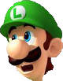

Luigi
Almost always playing second fiddle to his brother, Mario, Luigi has found his niche. He stars in two of his own games as well as being an arguably better character than Mario in the last Super Smash Brothers game. His star is rising.

Almost always playing second fiddle to his brother, Mario, Luigi has found his niche. He stars in two of his own games as well as being an arguably better character than Mario in the last Super Smash Brothers game. His star is rising.